一. mix-blend-mode
mix-blend-mode 用于设定一个元素如何与其父元素或背景中的其他元素进行混合。常见的应用包括图片和文字在背景上的混合，让内容与背景色彩产生有趣的视觉效果。
div {
mix-blend-mode: difference;
}
1. 预设
1.1 normal 正常
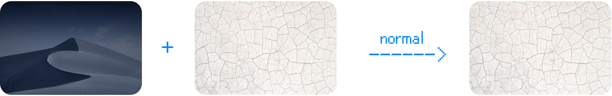2. 深色效果
以下这一系列的效果会让颜色变暗，而大多白色背景会消失。
2.1 darken 变暗
显示上下层较暗的部分。
下面的范例，由于上层的图片颜色都比下层的图片浅，所以最后只显示了下层的图片：
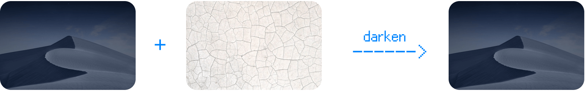2.2 multiply 色彩增值 （⭐️ 常用）
让两个图层中的暗色混合在一起，而白色部分则会消失。
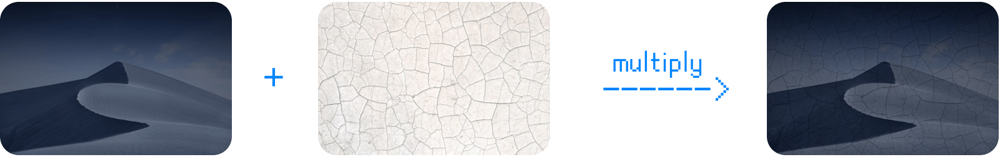2.3 plus-darker
效果比「 multiply色彩增值」与「 color-burn加深颜色」还要深。
（这是 CSS 中新增的混合模式，Photoshop 中没有）
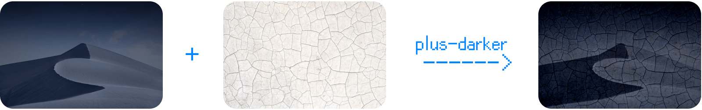2.4 color-burn 加深颜色
效果比「 multiply色彩增值」还要深。
2.5 使用情境 & DEMO
最常的使用情境是：
- 让图片上加一层浅色材质图片，让结果变得有纹理质感；
- 在图片上加上文字或手绘图案，「
multiply色彩增值」可以让文字或手绘图案看起来像是印在、画在上面，例如：
3. 明亮效果
以下这一系列的效果会让颜色变亮，而大多黑色背景会消失。
3.1 lighten 变亮
上下层显示较亮的部分。
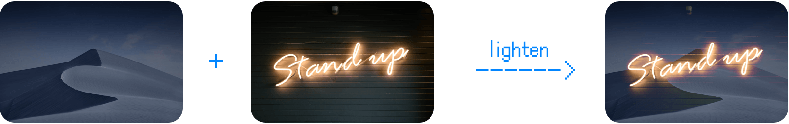3.2 screen 滤色（⭐️ 常用）
增加重叠区域的亮度。黑色部分会变得透明，而白色部分会保留原色。
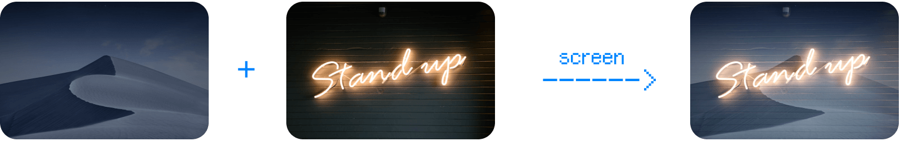3.3 plus-lighter
在重叠亮度时，也考虑了透明度。
（这是 CSS 中新增的混合模式，Photoshop 中没有）
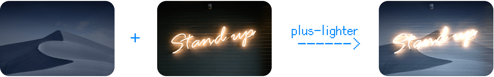3.4 color-dodge 加亮颜色
效果比「 screen滤色」还亮，对比度也更高，更有冲击力！
3.5 使用情境 & DEMO
最常的使用情境是：使用黑色背景的特效素材（如：光束、雨），叠在图片、影片上方。
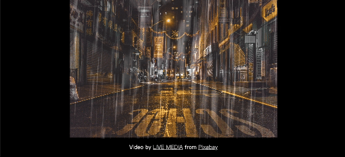4. 明暗效果兼具
以下这一系列的效果明暗颜色都保留，是重叠效果：
4.1 overlay 覆盖
接近于「 multiply色彩增值」和「 screen滤色」，但都没有去除白色与黑色的部分，并且增加对比度。
4.2 soft-light 柔光
明亮的部分变得更亮，黑暗区域变暗。
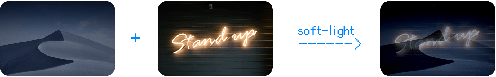4.3 hard-light 实光
效果比「 soft soft-light柔光」更强。
5. 颜色差异的效果
以下这一系列的效果都是强调上下层的不同之处：
5.1 difference 差异化（⭐️ 常用）
强调与背景的差异之处，能有效提升辨识度。如果文字或其他元素需要同时出现在黑白两种背景间，而且还要清楚辨识时，这会很好用！
（如同我们开头提到板块设计官网的例子）
5.2 exclusion 排除
效果对比度比「 difference差异化」弱一点。
6. HSL 颜色混合效果
以下这一系列的效果都是在 HSL 色彩空间中合成颜色，如同使用滤镜调色：
6.1 hue 色相
保留下层的明亮度（L）和饱和度（S），但使用上层的色相（H）的颜色。
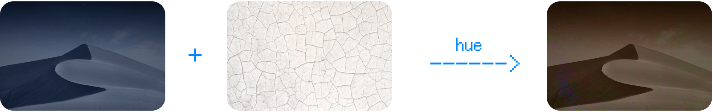6.2 saturation 饱和度
保留下层的明亮度（L）和色相（H），但使用上层的饱和度（S）的颜色。
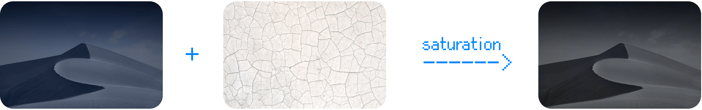6.3 color 颜色
保留下层的明亮度（L），但使用上层的饱和度（S）和色相（H）的颜色。
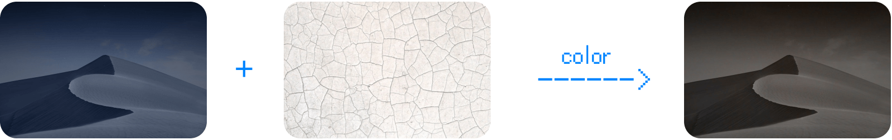6.4 luminosity 明度
保留下层的饱和度（S）和色相（H），但使用上层的明亮度（L）的颜色。
二. background-blend-mode
background background-blend-mode是当你使用多重背景（背景图片、颜色、渐层等）时，可以控制它们的混合模式。使用方法与可用的数值基本上与mix-blend-mode基本上一样。
div {
background-blend-mode: difference;
}
演示
以下范例我们也是用「 multiply色彩增值」，做出了颜料画在墙上的效果，只不过这次是使用background属性：